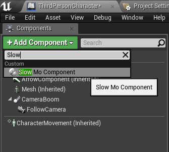
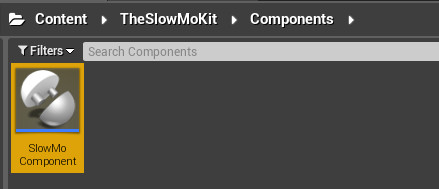
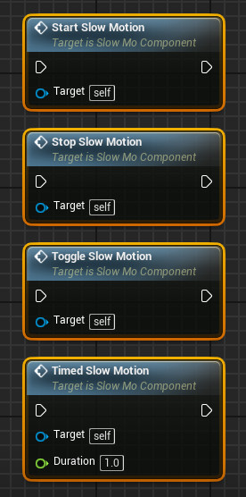
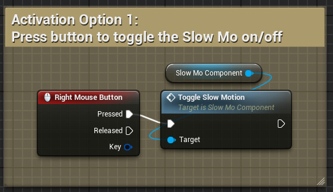
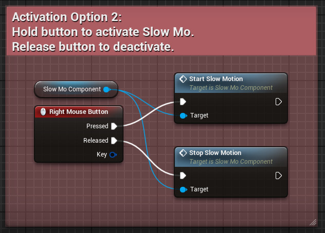
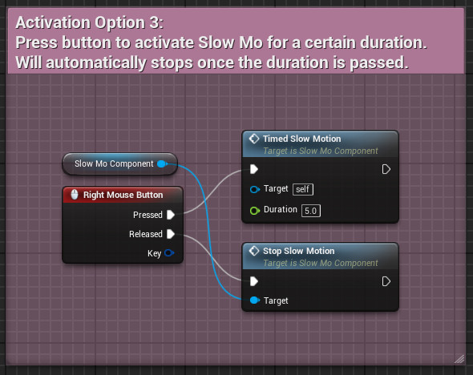
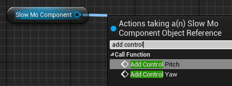
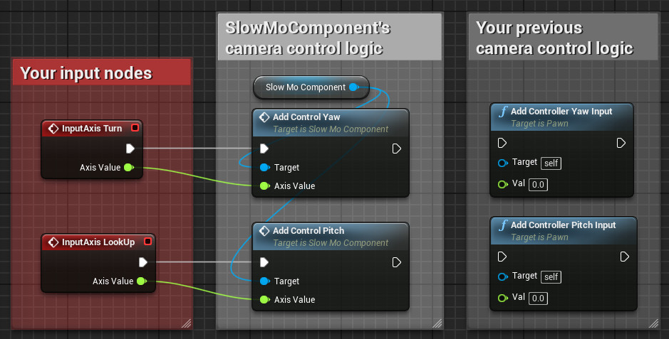
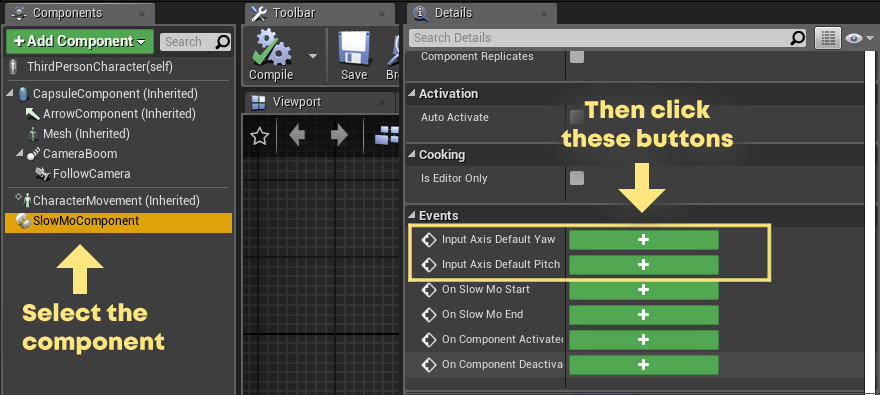
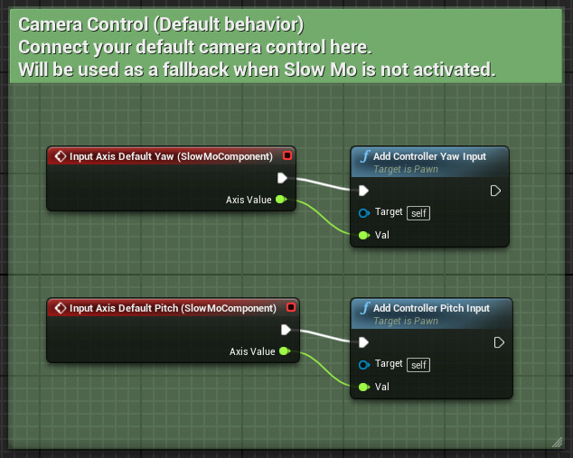

How to use the Slow Mo Kit
Add the component to your character
-
First, you'll need to have a character ready.
Open your character blueprint, click on the Add Component button, and add the SlowMoComponent to your character.
The component itself can be found in Content/TheSlowMoKit/Components/SlowMoComponent.

Add the activation triggers
-
Next, you will need to add the functions required to activate/deactivate the slow motion effect.
There are 4 nodes that you can use for this.- StartSlowMotion, as the name implied, used to start the slow motion effect.
- StopSlowMotion, as the name implied, used to stop the slow motion effect.
- ToggleSlowMotion, this will toggle the slow motion effect on/off, depending on the current state.
- TimedSlowMotion, this will trigger a timed slow motion effect that will last until the given duration (in seconds) is passed.

There's at least 3 common ways on how to use these functions.
-
If you wish to start/stop the slow motion using a single button press,
connect the ToggleSlowMotion to your button input.
-
If you wish to activate the slow motion when a button/trigger is being held down,
connect the button press input to StartSlowMotion, and the button release input to StopSlowMotion.
-
If you wish to activate the slow motion effect, but only for a limited time/duration,
you can substitute the StartSlowMotion node in Activation02 and replace it with the TimedSlowMotion node instead.
Set the duration (in seconds) of the Slow Mo effect in the duration parameter.
Adjust the Slow Mo camera input nodes
Next is how to adjust the rotation control during Slow Mo.
In essence, you will need to substitute your normal camera control inputs with the one provided by the SlowMoComponent.
Steps as follows.
-
Select the SlowMoComponent from your component tabs, drag it into your Event Graph,
Pull AddControlYaw and AddControlPitch from the node.
-
Find your default input nodes for yaw and pitch, and connect them to the SlowMoComponent's AddControlYaw and AddControlPitch.
Don't delete your previous camera control logic, we'll use them for the next steps.
-
Next, select the SlowMoComponent again from your component tabs.
Go to the Details tab, scroll down until you find the Events section.You should find the following buttons:
- InputAxis_DefaultYaw
- InputAxis_DefaultPitch
Press both of these buttons, it will add 2 event nodes on your Event Graph.

-
Find your default camera control logic (the one you disconnect from the inputs previously),
Connect your default camera control logic to both InputAxis_DefaultYaw and InputAxis_DefaultPitch.
And you're done!
The steps above should cover all the basics on how to apply The Slow Mo Kit to your character.
Make sure to test it first and see if it works on your side.
If you wish to further adjust the package, details can be found in the next page.
If you have trouble or questions about the system, feel free to send us a message either through email or discord.